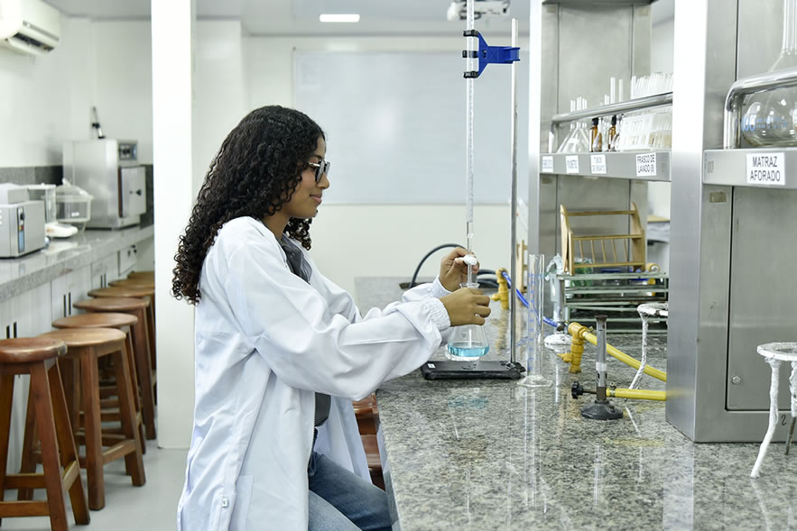

El hombro aparece sobre el pupitre
Con el celular, el grupo ve una luxación de hombro en 3D, a escala real, encima de la mesa.

Clase · Tecnologías inmersivas
Qué es, dónde se usa y cómo aprovecharla de forma responsable
Para empezar
Piensa tu respuesta: la retomaremos al final.
Objetivo de la clase
Conceptos fundamentales
Añade elementos digitales a tu entorno.
Integra lo digital con el espacio físico y permite interactuar con ello.
Te sitúa dentro de un entorno simulado.
Un mismo ejemplo
Con el celular, el grupo ve una luxación de hombro en 3D, a escala real, encima de la mesa.
Con un visor, cada estudiante entra a una sala de urgencias simulada y examina la luxación desde todos los ángulos.
El hombro queda anclado a la mesa: lo rodean y devuelven la cabeza del húmero a su lugar con las manos.
Pruébalo tú · Realidad aumentada
⚠ Estás en una dirección local: publica la presentación (HTTPS) para que el QR funcione en los celulares.
Evolución de XR
1838
Dos imágenes ligeramente distintas crean sensación de profundidad.
1968
Un casco conectado a un computador superpone gráficos a la vista.
2010s
Cámara, GPS y sensores del móvil llevan la RA a millones de personas.
Hoy
Siguen las manos y el entorno sin cables ni computador externo.
Panorama de aplicaciones · capítulos 4 a 12
Comunicarnos, colaborar y trabajar en un mismo espacio.
Probar un producto o ver el mueble en casa antes de comprar.
Visitas, modelos 3D y simulaciones.
Bienestar, diagnóstico, terapia y apoyo quirúrgico.
Juegos, cine inmersivo, conciertos y entrenamiento.
Recorrer un inmueble o un diseño antes de construirlo.
Visitar el destino y el hotel antes de reservar.
Diseño, montaje guiado, inspección y logística.
Entrenar situaciones críticas, con uso responsable.
Capítulo 6 · Educación y formación
El tema central de la clase.
Educación y formación
Tu turno · caso educativo
Estudiantes de un programa de salud deben aprender a actuar ante un derrame de una sustancia química en el laboratorio.
Equivocarse en la vida real sería peligroso.
Elige RA, RV o RM y justifica: ¿qué permite practicar? ¿qué limita?
Clic en una opción = +1 voto · Shift + clic = −1
Analicemos las elecciones
| En el caso del derrame… | RA | RV | RM |
|---|---|---|---|
| ¿Ves el laboratorio real? | Sí | No | Sí |
| ¿Puedes equivocarte sin riesgo? | En parte | Sí, todo es simulado | En parte |
| ¿Usas el equipo real? | Sí, con guías digitales | No | Sí, con el derrame simulado |
| Útil sobre todo para… | Seguir el protocolo paso a paso | Vivir la emergencia completa | Ensayar con el equipo real |
No hay una única respuesta: depende del objetivo de aprendizaje.
Desafíos de XR
Los dispositivos registran el espacio, los movimientos y hasta la mirada.
Proteger esos datos y evitar golpes o caídas mientras estás inmerso.
¿Quién responde por los datos y por lo que ocurre dentro de la experiencia?
Mareo y fatiga visual: sesiones cortas y pausas.
En nuestro caso: ¿qué datos guarda la simulación? ¿cuánto debe durar cada sesión? Diseñar experiencias responsables es parte del aprendizaje.
Futuro de XR
Visores autónomos, sin cables, aunque aún voluminosos.
Gafas tan ligeras y cómodas como las de uso diario.
Seguimiento de manos y ojos en visores comerciales.
Sensaciones táctiles realistas e interfaces conectadas al cuerpo.
Comprobación
¿Cómo practicar lo peligroso sin el peligro real?
Tu futuro comienza aquí
*Vigilada MinEducación